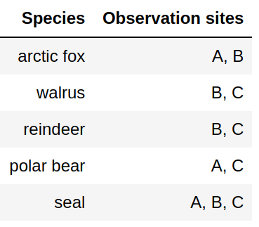
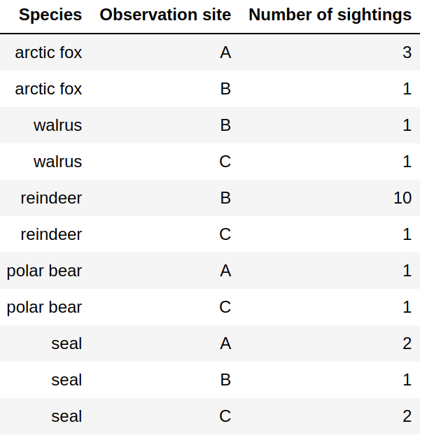

Tidy data and dealing with messy data¶
Objectives
Knowing about different storage formats
Knowing about the tidy data format
Be able to reformat tabular data into the tidy data format
Instructor note
25 min motivation/discussion/demo
In the previous episode we read data from nicely formatted “plain” text files. But sometimes the data is in a spreadsheet or in less nicely formatted text files. In this episode we will discuss strategies for how to work with these.
Importing data from spreadsheets¶
We will create a spreadsheet with the following content (content does not matter, can be adapted):

Example spreadsheet with a side note.¶
Copy this also to the second sheet and for demonstration purpose add some side-notes to the second sheet and also color one or two cells (some people like to give some meaning to cells using color).
Save the spreadsheet as experiment.xls.
Now we will together try to read and inspect both sheets in the Jupyter notebook:
import pandas as pd
data = pd.read_excel('experiment.xls', sheet_name="Sheet1")
data
data = pd.read_excel('experiment.xls', sheet_name="Sheet2")
data
Discussion
We can import data from spreadsheets! (more documentation)
“Side notes” in spreadsheets can be annoying in this context
Also encoding data in cell colors is a problem now
Tidy data¶

Example spreadsheet (this is a phantasy dataset, apologies to biology students/researchers - this is not my domain).¶
What is the problem with storing data like this?
Format: Limited interoperability with other programs
Error prone (see e.g. this famous example)
Difficult to parse (“understand”) by scripts: difficult to automate
Not in tidy format: difficult to extend/modify
How should we arrange the data?
{kind=link}

Attempt 1: Not great since we need to somehow divide at the comma.¶

Attempt 2: Not great - adding observation sites forces us add columns and adapt scripts.¶

Attempt 3: Not great - adding species forces us add columns and adapt scripts.¶
{kind=link}

Tidy data format: Columns are variables, rows are observations/measurements. Easy to add new species and sites.¶
Tidy data format
Columns are variables
Rows are observations/measurements
“Long form”
Order does not matter
Easy to extend with more species and more sites without modifying the scripts
Structure for storing data - this does not mean that this is ideal for tables in presentations or publications
Standard formats¶
Species,Observation site,Number of sightings
arctic fox,A,3
arctic fox,B,1
walrus,B,1
walrus,C,1
reindeer,B,10
reindeer,C,1
polar bear,A,1
polar bear,C,1
seal,A,2
seal,B,1
seal,C,2
Data cleaning¶
Often we want to visualize data sets with inconsistent or missing entries:
Date,Organization,Number of participants
2020-09-27,UiT,20
Oct 10 2020,UiT Norges arktiske universitet,15
"Nov. 11, 2020",UiT The Arctic University of Norway,40
2020-12-12,UiT The Arctic University of Norway,-
Data cleaning is a bit outside the scope of this course (although we have done some of this in the pandas episode) but still good to know:
There are tools to clean and merge inconsistent data sets (e.g. OpenRefine, see also this Data Carpentry lesson)
This does not have to be done manually
Reading data that is not in CSV format¶
Now we know that storing data in standard formats can be convenient and we know about the tidy data format but sometimes we don’t have control over this: we may get a text file from another program or an instrument and now we are expected to deal with it.
As an example, we got two text files from two different instruments. We wish to extract all frequencies and all intensities into two lists.
This is one, example1.txt:
result from instrument: R2-D2
------------------------------------------
measurement frequency intensity
* 1 0.01 0.01
* 2 0.02 0.02
* 3 0.03 0.01
* 4 0.04 0.10
* 5 0.05 0.20
* 6 0.06 0.12
* 7 0.07 0.07
* 8 0.08 0.02
* 9 0.09 0.01
* 10 0.10 0.01
==========================================
timestamp: Sat Mar 27 03:30:34 PM CET 2021
And here is the other one, example2.txt:
result from instrument: C-3PO
=============================
numbers we want: 10
0.01 0.01
0.02 0.02
0.03 0.01
0.04 0.10
0.05 0.20
0.06 0.12
0.07 0.07
0.08 0.02
0.09 0.01
0.10 0.01
unrelated numbers:
1.23 4.56
7.89 0.12
At the end we want the code to produce these two lists:
frequencies = [0.01, 0.02, 0.03, 0.04, 0.05, 0.06, 0.07, 0.08, 0.09, 0.1]
intensities = [0.01, 0.02, 0.01, 0.1, 0.2, 0.12, 0.07, 0.02, 0.01, 0.01]
Discussion
Before we discuss possible solutions, it can be a good exercise to describe in words what the code should do to extract the numbers.
Below you find possible solutions for these two examples. These are designed to be somehow understandable (which does not mean that the code is trivial) and are not as short and as elegant as they could be. One way to make them more elegant would be to use regular expressions.
One solution for example1.txt:
def read_data(file_name):
# we start with empty lists
frequencies = []
intensities = []
# open the file with read permissions
with open(file_name, "r") as f:
# iterate over all lines in the file object "f"
for line in f:
# we are only interested in lines that start with "*"
if line.startswith("*"):
# we split the line on "whitespace"
# the "_" means we are not interested in the first two entries
_, _, frequency, intensity = line.split()
# add the new numbers to the lists
# we convert from string to float
frequencies.append(float(frequency))
intensities.append(float(intensity))
# function returns the result
return frequencies, intensities
# here we are outside the function
frequencies, intensities = read_data("example1.txt")
print(frequencies)
print(intensities)
One solution for example2.txt.
def read_data(file_name):
# we start with empty lists
frequencies = []
intensities = []
# open the file with read permissions
with open(file_name, "r") as f:
# iterate over all lines in the file object "f"
for line in f:
# we are only interested in lines that start with "*"
if "numbers we want" in line:
# we split the line on "whitespace"
words = line.split()
# we are only interested in the last element
# -1 means last element in that list
last_element = words[-1]
# convert from string to int
num_measurements = int(last_element)
# now we know the next 10 lines are the interesting ones
# range(10) produces a list with 10 elements: [0, 1, 2, 3, 4, 5, 6, 7, 8, 9]
# we use it to iterate exactly 10 times
for _ in range(num_measurements):
# this advances f by one and we get one line at a time
next_line = next(f)
words = next_line.split()
frequency = float(words[0])
intensity = float(words[1])
# add the new numbers to the lists
frequencies.append(frequency)
intensities.append(intensity)
# function returns the result
return frequencies, intensities
# here we are outside the function
frequencies, intensities = read_data("example2.txt")
print(frequencies)
print(intensities)